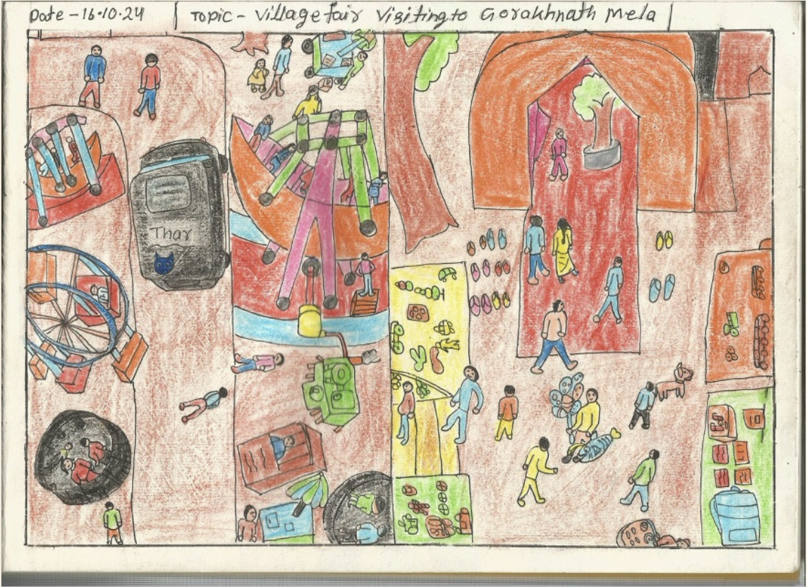

Welcome to the Project
Mera Aas Padose is a participatory, arts-based education project that empowers children from BND Public School in Delhi to creatively explore, document, and reflect on their immediate environments. Through drawing, model-making, and drama, students reconnect with their cultural roots, gain confidence, and tell their own stories in vibrant, expressive ways.
